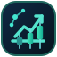

Genera un borrador verificable. No compra un contrato.
No hay ejecución, ni cotización del contrato, ni ganancias calculadas.
Permite documentar una intención de cierre para una posición demo que exista en el futuro.
La existencia, elegibilidad y precio del contrato no pueden verificarse sin cuenta demo autenticada.
Los retiros se gestionan por el titular dentro de su sesión oficial en Deriv. Esta aplicación nunca solicitará ni almacenará códigos de verificación, destinatarios, tokens de pago ni claves de retiro.
Deriv tiene rutas de retiro por agentes de pago con requisitos particulares; no deben equipararse a todos los métodos disponibles para una cuenta.
Abrir Deriv oficialUna vez iniciada sesión: Cajero → Retirar, sujeto a los métodos habilitados en tu cuenta. No se transfiere ningún dato desde este proyecto.
Capital de referencia, no de cuenta: 77,92 USD (valor que aparecía en tu captura). Sin una consulta autenticada no podemos comprobar que siga disponible.
Se aplica a los borradores un límite pedagógico de 1 % del capital virtual por operación. No se activa ninguna operación si faltan datos o si el importe supera ese porcentaje. Para contratos reales habría que consultar importes mínimos, pagos, exposición y saldo desde el servidor.
Los borradores son documentos de estudio que no contienen secretos ni generan operaciones. No quedan almacenados en el navegador al recargar.